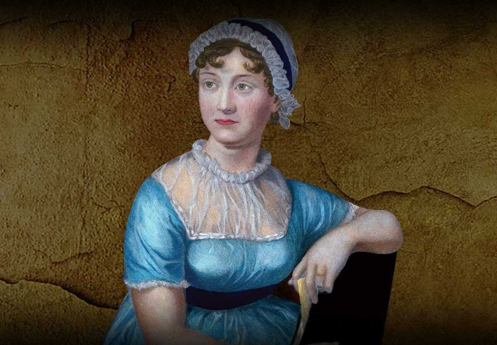

Jane Austen

Published Novels
Sense and Sensibility (1811)
Pride and Prejudice (1813)
Mansfield Park (1814)
Emma (1815)
Northanger Abbey (1817, posthumous)
Persuasion (1817, posthumous)
Juvenilia and Early Writings
Love and Freindship (written 1790, published posthumously)
The History of England (1791)
Catharine, or the Bower (1792)
Lady Susan (written ~1794, published 1871)
Unfinished & Posthumous Works
The Watsons (unfinished, ~1804)
Sanditon (unfinished, 1817)
Plan of a Novel, according to Hints from Various Quarters (1815–1816)